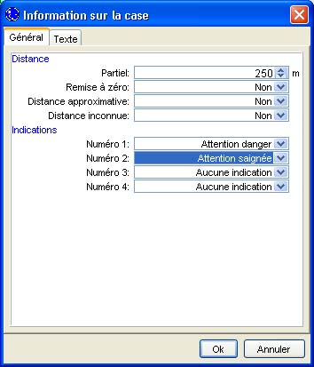
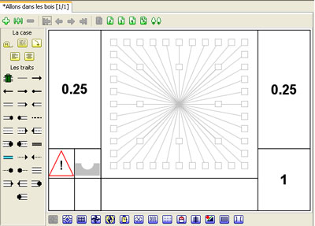

Choisir
Indications dans le menu
Données, une
boîte de dialogue apparaît pour vous permettre d'indiquer les indications à ajouter à la case. Ces indications, qui peuvent être au nombre de quatre par case, sont affichées au niveau de la case sous la forme de petits dessins pour attirer l'attention du lecteur. Pour notre part, nous avons choisi les indications "Danger" et "Saignée" pour indiquer au lecteur qu'il y a un danger et qu'il s'agit d'une saignée.

Au niveau de la case, en dessous de la distance partielle, nous pouvons apercevoir les deux indications sélectionnées.
